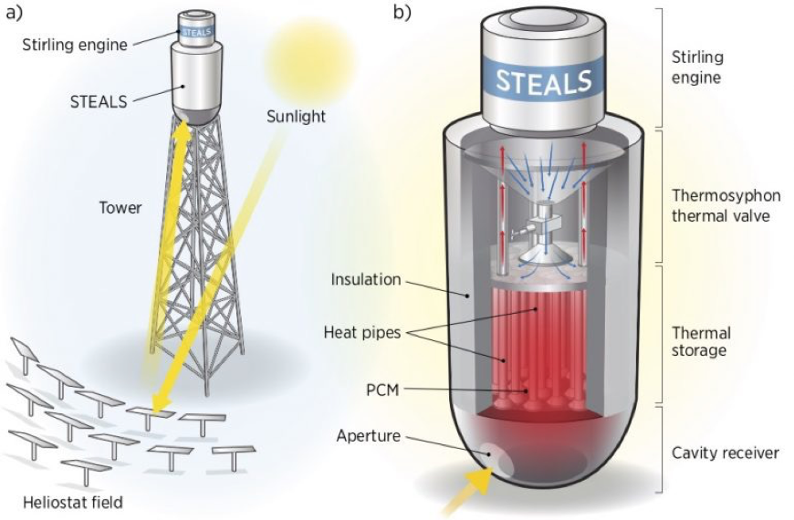
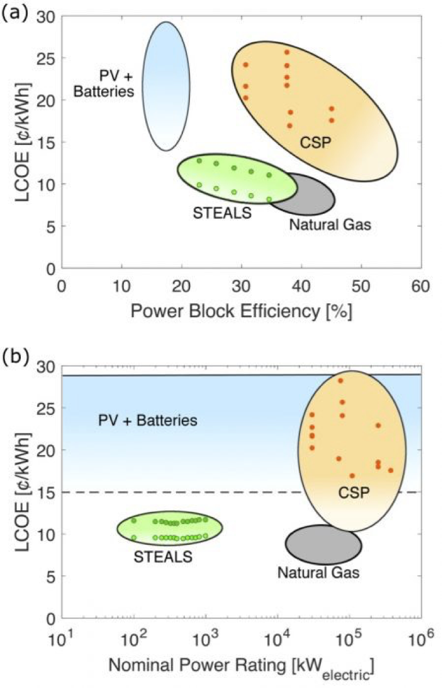

Concentrating solar power (CSP) has experienced less growth than Solar Photovoltaics. Globally, just 1.5 GW of new CSP capacity became operational from 2015-2017. The United States hasn’t installed any new CSP capacity since September 2015.
Conventional CSP designs use very large plant sizes, with large amounts of thermal energy storage, to leverage economies of scale. This makes eminent sense as a strategy to minimize the cost of generating electricity on a per-kWh basis, but large plant sizes require huge capital investments (>$1B). This limits conventional CSP to only utility-scale markets increases financial risk.
So with CSP falling behind, recently reported work from the National Renewable Energy Laboratory (NREL) and the Colorado School of Mines (CSM) proposes a new kind of approach that radically differs from conventional CSP designs.
(a) The Solar Thermal to Electricity via Advanced Latent heat Storage (STEALS) design integrates latent heat thermal energy storage, a valved thermosyphon, and a Stirling engine on top of a small scale sola rpower tower. (b) Heliostats reflect sunlight through a cavity receiver to the bottom of a thermal storage tankthat is filled with a phase change material (PCM). Sodium heat pipes are embedded in the PCM, and extend vertically from the receiver to the top of the storage tank to passively distribute heat through the storage system. The top of the heat pipes interface with the evaporator of a valved thermosyphon. At this surface, evaporates, travels up through vapor tubes (red arrows), and condense son the heater head of the Stirling engine. Liquid sodium then returns to the evaporator through a return funnel (blue arrows). To regulate electricity output, opening or closing a valve in the liquid return tube throttles the flow of sodium and controls the heat flow from the storage to the power block.
Their idea is to shrink down the typical CSP plant size by 1000 times – from 100 MW to 100 kW and use inexpensive materials and passive heat transfer mechanisms to reduce cost. At this smaller scale, they have designed a solar power tower with the entire system, including thermal energy storage and a power block, held on top of the tower.
In their paper, the NREL-CSM team predicts that STEALS would have an annual efficiency of 24%. This includes a higher than usual heliostat field optical efficiency because of its small size (71% on an annual basis), but a lower power block conversion efficiency (30%) because a small scale Stirling engine is lower efficiency than large Rankine cycles.
STEALS has the potential to be cost competitive with both renewable technologies and natural gas peaking plants at a capacity factor of 30%. (a) The levelized cost of electricity (LCOE) of STEALS falls with increasing power block efficiency and depends significantly on power block cost. (b) The LCOE of STEALS is nearly independent of system size. This is due to the modularity of Stirling engines as the power block and the scalability of the entire system design.
For more info, go here.
The next step in this new concept development is the construction of a pilot plant to validate the predicted efficiency and operating costs. Is this a paradigm changer? Not yet, but has big potential.
What do you think?